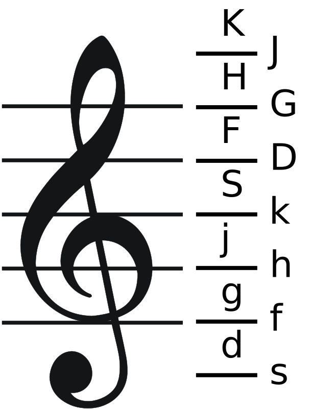
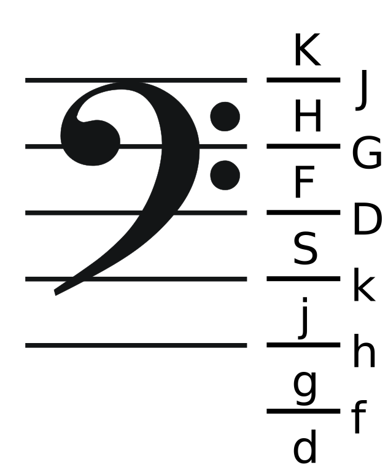

Tune in your head to ask your friends about? Want to jot a melody down for later?
Vurm is free to use through the magic of banner advertising.
Vurm works best with Chrome's inbuilt music extension, but copes on Firefox, Safari, and Dolphin. IE seems to be broken.
Press the keys below (on your screen or keyboard) to work out your tune, then share the results.
| s | e | d | r | f | g | y | h | u | j | i | k | S | E | D | R | F | G | Y | H | U | J | I | K | ||||||||||
| s | d | f | g | h | j | k | S | D | F | G | H | J | K | ||||||||||||||||||||
|---|---|---|---|---|---|---|---|---|---|---|---|---|---|---|---|---|---|---|---|---|---|---|---|---|---|---|---|---|---|---|---|---|---|
Your tune is right here for you to edit; each letter represents a note.
Share or bookmark this page once it plays your tune properly. These buttons might work after a refresh:
You can change the speed of the WHOLE tune by putting several / and \ tweaks at the VERY start of your piece (before any notes). This sets the tune speed as if those tweaks were placed after every note.
Type 'return' or 'space' to make the tune field easier to follow.
Type * to start a new harmony line and *1 *2 ... *9 to add more to the 1st, 2nd, ... 9th harmony line.
Type + and - to raise or lower following notes in the current harmony line by an octave (during full playback only).
e>g and g<e make e longer (dotted) and halve g. Doubling them like e>>g doubles the effect. Handy for jigs and mediaeval music!
If you're copying from sheet music, these treble and bass clef files might be helpful:
|  |  |
Remember to move up to a black note if a line is marked # and down if it's marked b.
If you need a 'dotted' note on its own, use e\/ which is half a beat plus a beat - the length of three half beats.
If you need a double dot, then e\/\/ is seven quarter beats - a 'dotted' note (e\/) cut in half by the second \ to make three quarter beats (a dotted quaver), and the final / adding one beat - which is four additional quarter beats.
If you need a dotted quaver with a semiquaver then e>\g\ or e<\g\ is probably clearer than e\/\g\\. It's certainly clearer to put e>>\g\ or e<<\g\for the double dotted quaver and demisemiquaver, rather than e\/\/\g\\\ or e\\\g\/\/\!
You need no account with us, and we make no claim on your intellectual property.
This page's music format is designed for simplicity and is not intended to compete with ABC format! We have started work on a full ABC editor.
Vurm derives from 'Ohrwurm' - a German word referring to a tune that catches your ear and plays endlessly in your mind. In English, we say 'earworm'. Still very annoying!
The Vurm site is copyright 2014 Tim Baverstock, all rights reserved for now.
MIDI.js is used under its MIT license and is hereby published.
{kind=link}
{kind=link}